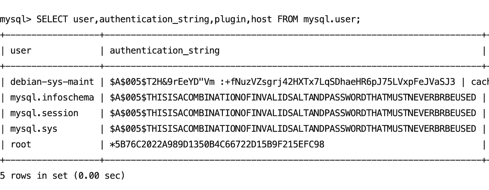

安装
这个比较简单。
sudo apt update
sudo apt install mysql-server
然后启动
#启动MySQL服务：
sudo systemctl start mysql.service
#使MySQL服务在系统启动时自动启动：
sudo systemctl enable mysql.service
检查MySQL服务的状态：
sudo systemctl status mysql.service
登录到MySQL
sudo mysql -u root -p
设置密码
安装后发现，可以无密码登陆，后面需要远程连接，设置密码是必须的。
ALTER USER 'root'@'localhost' IDENTIFIED WITH mysql_native_password BY "你的密码';
刷新权限
flush privileges;
查看是否有密码：
SELECT user, authentication_string, plugin, host FROM mysql.user;
发现root用户authentication_string字段是有内容的了

增加远程访问
修改mysql库下的user表里的host字段
update user set host = '%' where user = 'root';
检查host字段是否修改掉：
select host, user from user;
刷新权限
FLUSH PRIVILEGES;
发现依然无法连接（端口已经开放了）
修改mysqld.cnf文件：
sudo vim /etc/mysql/mysql.conf.d/mysqld.cnf
将里面的bind-address修改为0.0.0.0。
重启数据库sudo systemctl restart mysql.service搞定了。